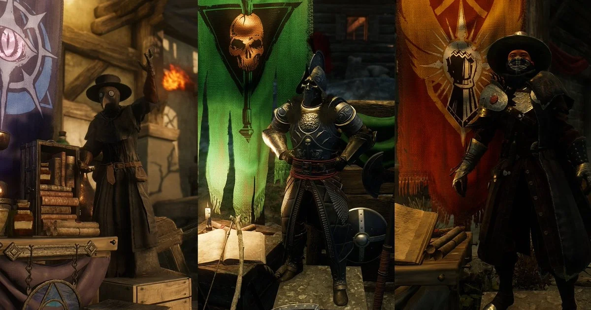
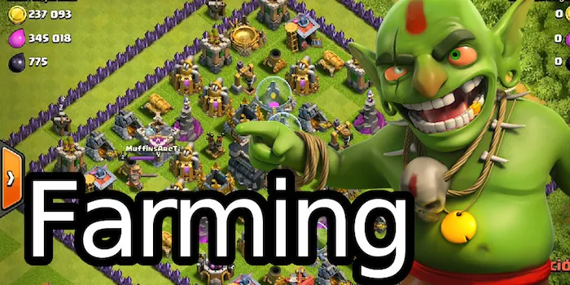
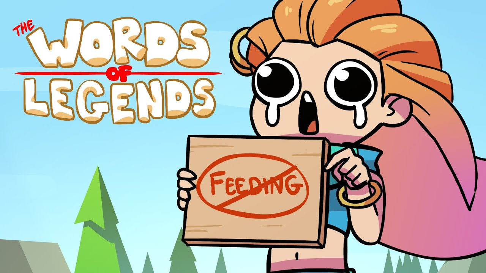

- Facción
- Dentro del mundo de juego, normalmente juegos de rol o RPG, cada uno de los bandos
que un jugador puede elegir para vivir y trabajar.
|

|
- Farmear
- Realizar repetidamente una accion con el fin de conseguir puntos de experiencia, dinero
, objetos o cualquier otra ventaja para nuestro personaje, generalmente en juegos RPG.
|

|
- Feedear
- Morir repetidas veces a manos de jugadores rivales, generalmente de forma intencionado,
con el fin de servir como fuente de experiencia u otro tipo de ventajas
|

|
- Flamear
- Increpar o insultar de forma exagerada y sin motivacion racional a otros jugadores, con el unico fin de provocar
una situación hostil.
|
|
- Fuego Amigo
- Disparos o ataques provenientes del compañeros del mismo bando.
-
|
|